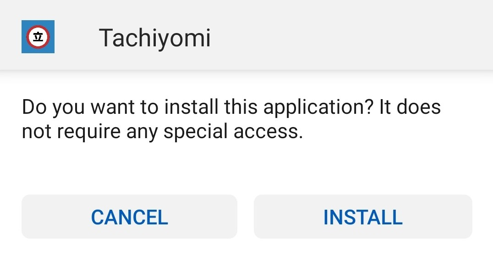
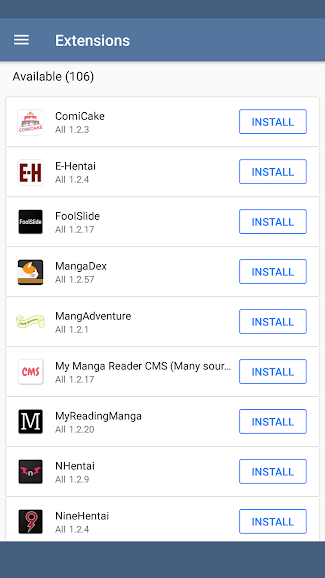

Get started with Tachiyomi
Tachiyomi is a free and open source manga reader for Android.
Installation
1 Get the latest stable release from GitHub.
tachiyomi-vX.Y.Z.apk
2 Install the .apk file you just downloaded from GitHub.
Extensions
3 Once installed, open the app and navigate to "Extensions".